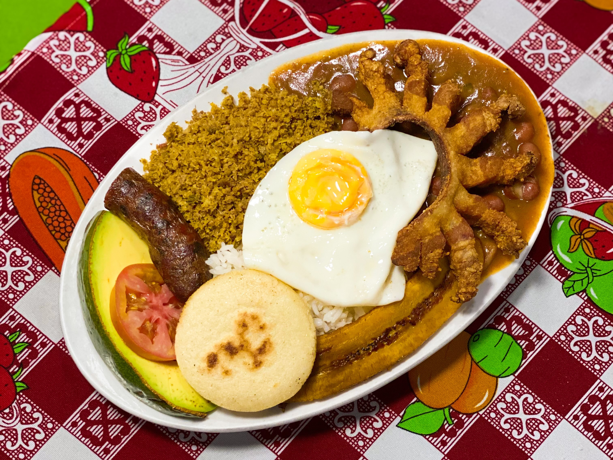
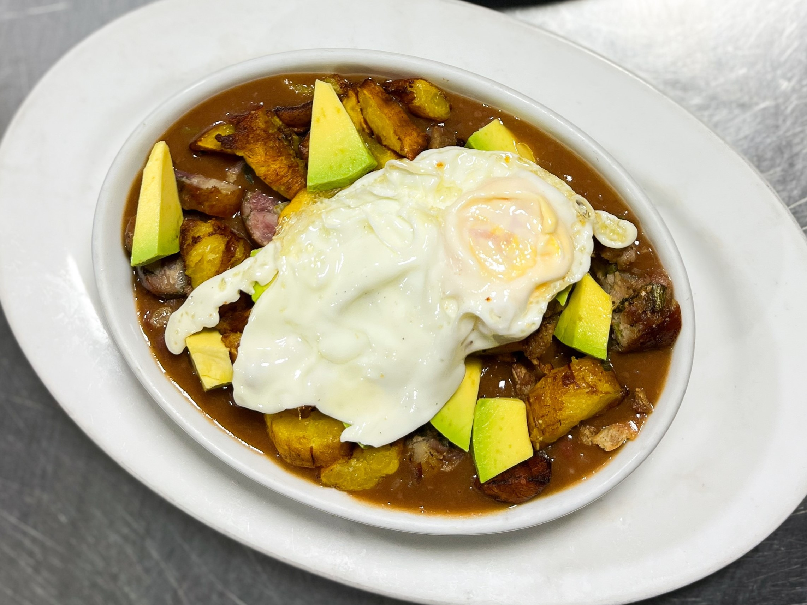
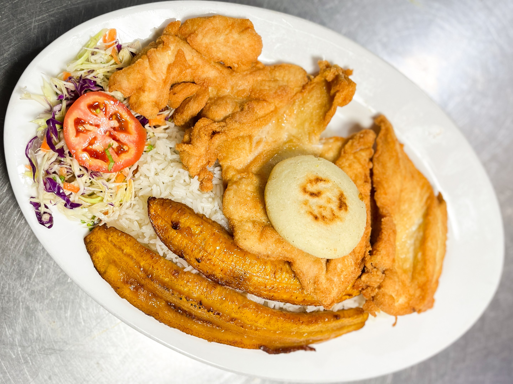
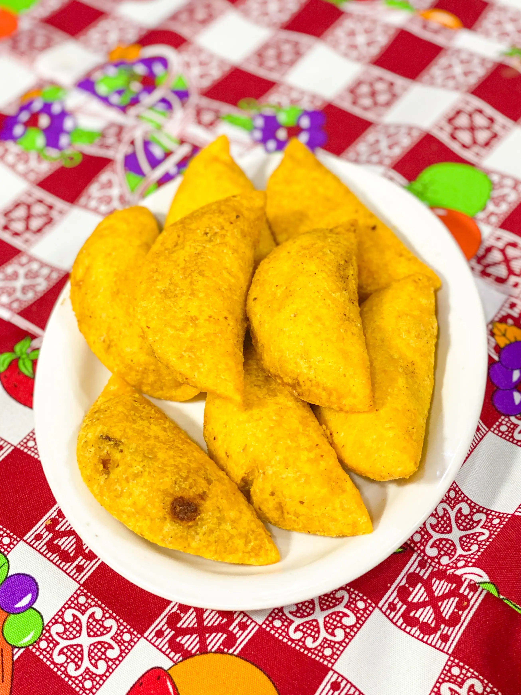
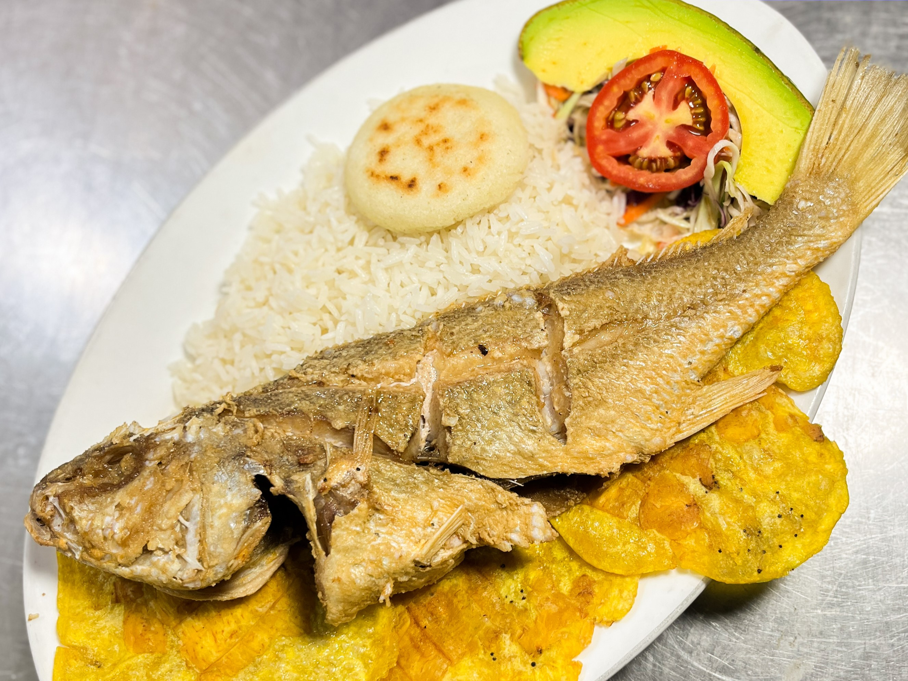
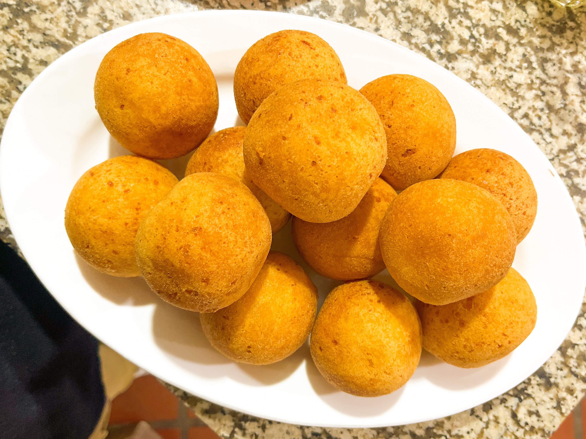
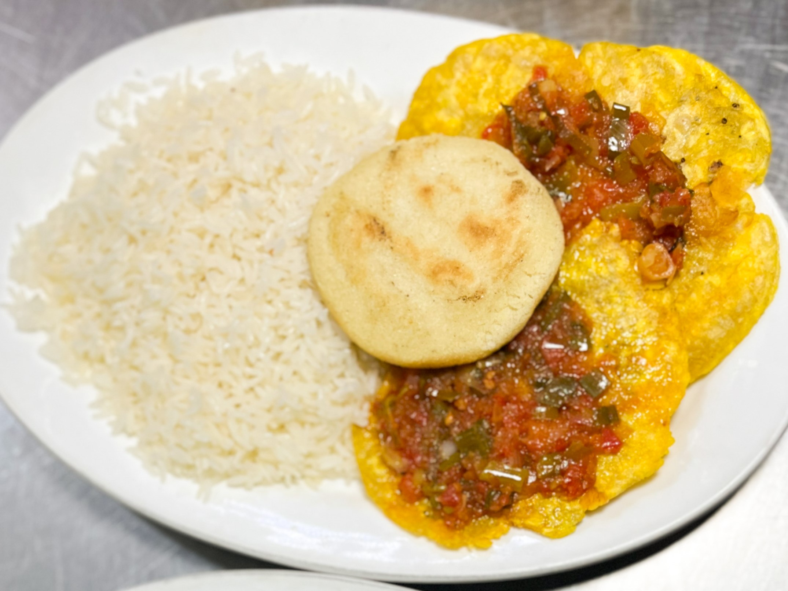
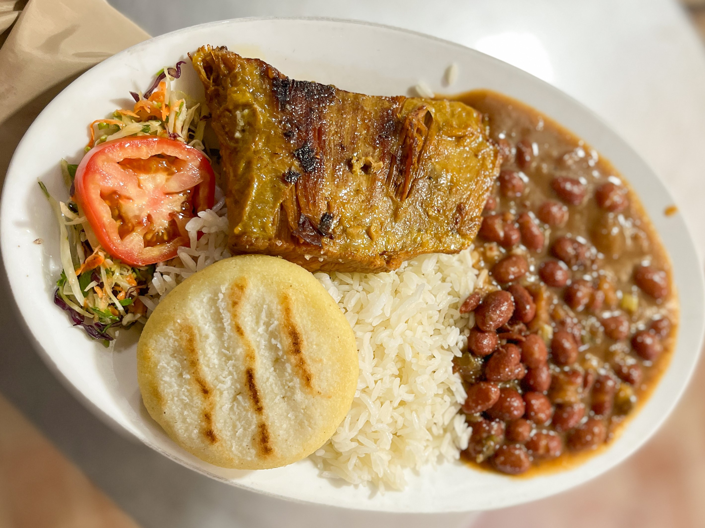
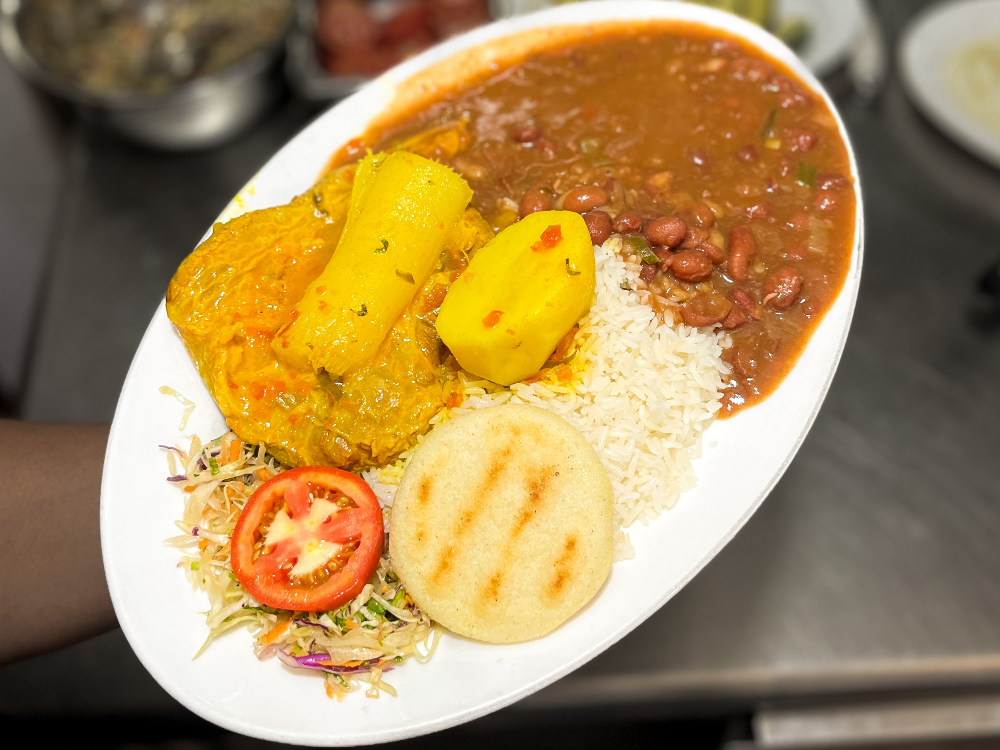
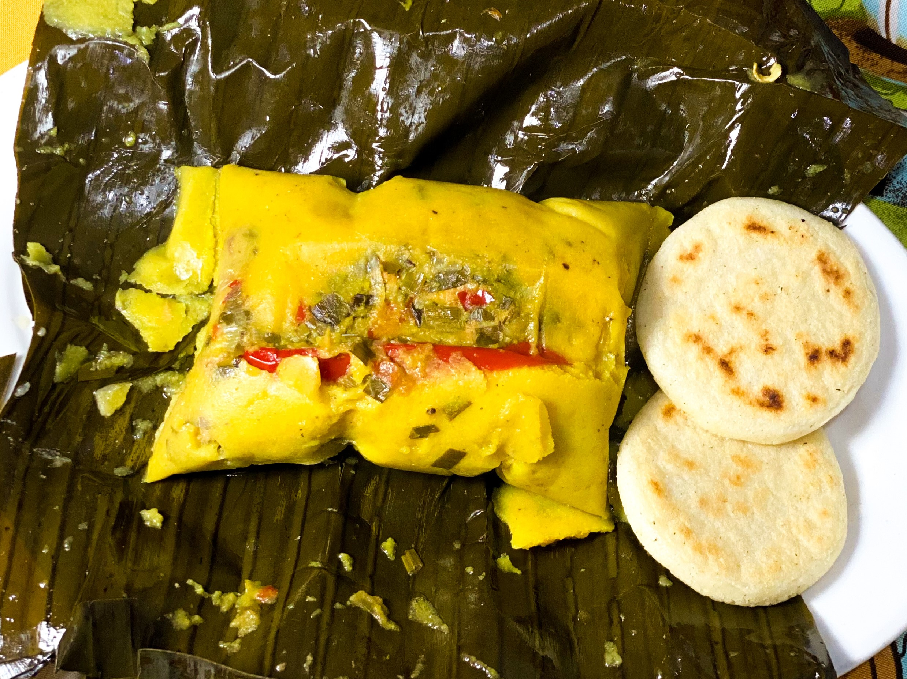

Nuestros platos
Cinco clásicos de la cocina colombiana, hechos como en casa

Bandeja Paisa
Arroz, fríjoles, carne molida, chicharrón, huevo frito, plátano maduro, arepa, aguacate y chorizo. El plato más representativo de Antioquia.

Cazuela de Frijoles
Frijoles tradicionales en caldo espeso, servidos con trozos de plátano maduro frito, carne, aguacate y con un huevo frito.

Milanesa de Pollo
Jugosa pechuga de pollo con apanado crujiente, acompañada de dulces tajadas de plátano maduro, arroz blanco, arepa y ensalada tradicional.

Empanadas Colombianas
Masa de maíz frita, rellena de papa y carne guisada. Se sirven con ají casero de cilantro y limón.

Pescado Frito
Pescado entero frito y crujiente servido con patacones de plátano verde, arroz blanco, arepa asada y ensalada fresca de tomate y aguacate.

Buñuelo
Esponjosos buñuelos fritos elaborados con queso costeño y almidón de yuca, con un exterior dorado y crujiente ideales para compartir.

Patacones con Hogao
Crujientes patacones de plátano verde cubiertos con abundante hogao casero de tomate y cebolla, acompañados de arroz blanco y arepa asada.

Sobrebarriga Tradicional
Tierna sobrebarriga asada, servida con una porción generosa de frijoles rojos, arroz blanco, arepa asada y ensalada fresca de repollo y tomate.

Sudado de Sobrebarriga
Corte suave de sobrebarriga cocida en salsa criolla con papa y yuca sudadas, acompañada de frijoles rojos, arroz blanco, arepa y ensalada.

Hallaca Colombiana
Masa suave de maíz aliñada con guiso, vegetales y carnes, cocinada en hoja de plátano y acompañada de arepitas blancas asadas.